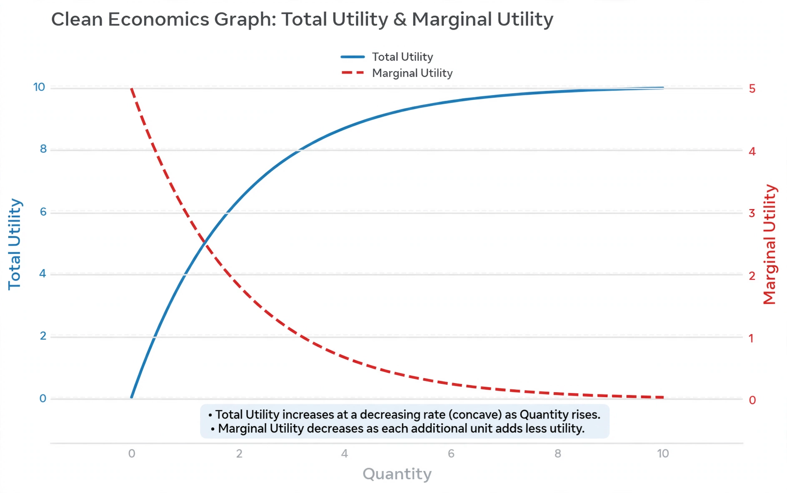

Marginal utility

| Marginal utility | |
|---|---|
| Field | Microeconomics |
| Definition | Additional satisfaction from consuming one more unit of a good |
| Key figures | Hermann Gossen, William Stanley Jevons, Carl Menger, Léon Walras |
| Related law | Law of diminishing marginal utility |
In economics, marginal utility is the additional satisfaction or benefit (utility) a consumer gains from consuming one additional unit of a good or service. It is a central concept of marginalism and of modern microeconomics, underpinning the theory of consumer choice and the explanation of prices.
Diminishing marginal utility
The law of diminishing marginal utility states that, all else equal, as a person consumes more of a good, the marginal utility from each additional unit declines. The first slice of pizza may be worth a great deal to a hungry diner; the fifth, very little; beyond some point extra consumption may even yield negative marginal utility. The principle was articulated by Hermann Heinrich Gossen in 1854 (Gossen's First Law) and independently developed in the 1870s "marginal revolution" by William Stanley Jevons, Carl Menger and Léon Walras.
Uses
Marginal utility explains the downward slope of demand curves: because each extra unit is worth less, consumers will buy more only at a lower price. It resolves the paradox of value — why water, essential to life, is cheap while diamonds are dear: price reflects marginal, not total, utility, and water is abundant at the margin. Consumers are modelled as allocating income so that the marginal utility per unit of currency is equal across goods. In welfare economics, diminishing marginal utility of income is invoked in arguments about progressive taxation and redistribution, though interpersonal comparisons of utility remain contentious.
Criticism
Critics note that utility is not directly measurable, that preferences may not be stable or independent of context, and that behavioural economics documents systematic departures from the model, including endowment effects and framing. Modern treatments often work with ordinal utility — rankings rather than quantities — which requires weaker assumptions.
See also: Marginal cost · Indifference curve · Consumer choice · Paradox of value